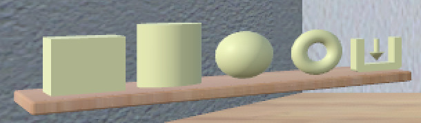

MakerVR User Guide
Overview
MakerVR helps you create models that you can then send to a 3D printer. It is designed to be relatively simple to use, even for someone with little to no 3D modeling experience. If you are intimidated by 3D modelers like Blender, you might find MakerVR useful.
MakerVR is inspired somewhat by OpenSCAD (my favorite program for creating 3D models). OpenSCAD is great if you don't mind typing in numbers for everything and have a reasonable amount of 3D graphics experience. MakerVR is designed to have a similar amount of power while still being useful to beginners.
Because precision is extremely important when 3D printing, MakerVR has several features that allow you to create models with exact dimensions, orientations, and positions.
VR and Non-VR Modes
MakerVR was originally designed to operate in a virtual environment because I it seemed like it would be a fun experience. But, since most people do not have a VR setup, I thought it might be useful if it also worked without VR, using just a conventional mouse and keyboard setup. And, since putting on and taking off a headset can be very inconvenient while developing an application (especially if you happen to wear glasses), I thought it might be useful and fun to allow using the VR controllers even without the headset. This turned out to be possible!
Each of these modes is called out in this guide when interaction differs among them. The modes are named as follows:
- VR mode is when you have a VR device hooked up, you are wearing the headset, and are holding the controllers.
- In conventional mode, you either do not have a VR device hooked up or you do, but are just choosing to use the mouse and keyboard.
- Hybrid mode is halfway between the other two: you have a VR device hooked up, you do not have the headset on, and you have at least one VR controller in your hand(s). Some behind-the-scenes nonsense takes place so that you can see the hands in the (non-VR) window.
Some VR experiences allow you or force you to walk around while using them. That wouldn't make sense for this application, so it is designed to make everything useful from one spot. If you're planning to use the VR mode, set it up for a comfortable, fixed standing or seated position. Note that the scene view is set up for sitting, so you may need to adjust your VR positioning for a different height if you prefer to stand.
Interaction
MakerVR responds to mouse and keyboard actions in any of the three modes. Let's assume everyone knows how to use them, including Keyboard shortcuts.
The VR controllers may be used in VR or Hybrid mode. MakerVR was developed using an HTC Vive (since that's what I have), but should (!) work with any standard VR controllers supported by SteamVR.
Controller use is as follows:

-
A cyan laser pointer emanates from the forward direction of each controller. the pinch action (usually some sort of trigger) activates whatever the laser is pointing to, if it is interactive. This action is equivalent to clicking the left mouse button on the same spot.
-
Some tools attach a hover guide to the hands to help indicate what will happen if you activate the grip action. See the documentation for the individual tools for details.
- The menu button activates a radial menu attached to the controller. Each item in the radial menu is a shortcut to some action. Slide your thumb around the trackpad to highlight the desired item and press anywhere on the trackpad to activate it. The menu is dismissed when you activate any radial menu button or if you press the menu button again.
You can configure the radial menu for each hand in the Settings Panel.
Any use of the word "drag" in this document refers by default to using the mouse or pinch action to grab some interactive widget and yank it around. A drag activated with the grip button held down will be called out as a "grip drag".
Text Input
Some parts of the application require text input: editing the name of a model, typing in a new file name, and maybe something else in the future. Who knows?
Using the keyboard is always an option for text. If you have the headset on in VR mode, you might not want to take it off or put the controllers down just to edit text. You're in luck; text editing in VR mode is available using VRKeys. It provides a virtual keyboard with a xylophone-like interface for editing text. It's pretty cool.
Alternate Input State
A few operations can be modified by either pressing the shift key on the keyboard or the center of either controller trackpad. You will see this referred to as "Alternate State" or just "Alt" in this documentation. For example, When clicking on a model to select it, the Alt version is to multi-select the model or deselect it if it is already selected. When interacting with the Scale Tool, the Alt version is a symmetric scale about the model's center point.
Sessions
Unlike many applications that save your work as a data file, MakerVR stores your session as a series of commands that you have executed. This means that you can save your session, quit, restart your session, and be back pretty much where you were. You can undo all of your work back to the beginning, if you feel like it.
When you start the application, the first thing you see is the Session Panel. It offers you the chance to continue the current session (if there is one), load a different session, or start a new session. The location of saved sessions is customizable in the Settings Panel.
The Work Area
The work area in MakerVR is based conceptually on a virtual workshop. You may notice the following elements:
- An exit sign. Clicking on this exits the application.
- A large disc in the middle of the floor with a grid on it. This is the stage, where your models will appear. The stage can be manipulated to change your view of the models. Drag it in a circular arc to rotate it. Drag it toward or away from the center to scale it up or down. Alt-clicking on the stage resets it to its default size and orientation.
- A pole on the right with a ring around it. That ring is a slider that can be dragged up and down to raise and lower your view of the room. Clicking on the ring brings you back to the default height. Alt-clicking on the ring also resets the default view, unless you are in VR mode (where the view always aligns with your head, of course).
- Several shelves with 3D icons on them. These represent various tools can interact with.
- A blue bar to the right of the exit sign that shows the current precision. See Precision for details.
- A framed panel that has a bunch of stuff on it. This is the tree panel that shows your models in tree form and lets you interact with them there. It has enough features to warrant its own section.
- Four walls, a floor, and a ceiling. They are just there for decoration.
Coordinate System, Colors, and Units

MakerVR uses the same coordinate system that most 3D printing software uses: right-handed, with +X to the right, +Y away from the viewer, and +Z up. Most everything in the application that aligns with these axes uses the standard RGB color scheme: X is red, Y is green, Z is blue.
Don't let the fact that this application is built on Unity with its ridiculous left-handed coordinate system bother you.
The current implementation assumes everything is in centimeter units. Everything is sized roughly for typical 3D printer build volumes.
The grid on the stage has thin lines every 1 centimeter, with thicker lines every 5 centimeters. The grid grows or shrinks with the stage so that you can always tell absolute sizes. The X and Y axes are colored red and green for reference.
Tooltips
Anything in the application that is interactive responds to hovering with the mouse or laser pointer by highlighting in some way. If you hover long enough, a tooltip should appear with information about the interaction.
Precision
Manual interaction is usually imprecise, so MakerVR provides several features to help with that. One is a variable precision setting for drag operations. The change created by an interactive drag or grip drag is snapped to the current precision setting.
The precision indicator (that bar to the right of the exit sign) shows the current precision setting. There are three such settings that apply to both linear and angular operations:
- 1cm / 15°
- .1cm (1mm) / 5°
- .01cm (.1mm) / 1°
If you need higher precision than .1mm or 1°, you should probably use a different application.
The keyboard shortcuts to increase and decrease precision are X and Z,
respectively. The Up and Down buttons on the VR controller trackpad may also be
used to increase and decrease precision.
Keep in mind that the precision setting may be modified during a drag or grip drag operation. Doing so has the following effects:
- Updates the precision indicator.
- Changes the precision of the current operation (position, size, etc.).
- Changes the precision of the [visual feedback][#feedback].
- Changes the relative amount of drag motion. This may be startling at first, but makes sense when you try it out. For example, if you want to move an object exactly 5.45cm to the right, you start out with 1cm precision and drag it 5cm. While still in the drag operation, increase precision to .1cm and drag it .4cm more. This uses the same amount of drag motion that 4cm would at 1cm precision, so it's much easier. Finally, increase precision again to .01cm and drag another .05cm to the right, again with the corresponding amount of drag motion. This behavior is applied to both drags and grip drags.
Once you get used to this, it becomes relatively easy to apply precise changes interactively. See the section on targets for another aid.
Feedback
All interactive drag operations display some sort of visual feedback. Operations that are essentially linear show the current dimension of that change along a line, while rotations show the current angle. Multi-dimensional changes such as uniform scaling and spherical rotation show feedback in all affected dimensions. The precision of the feedback matches the current precision setting.
Feedback is colored according to the coordinate system convention for the appropriate dimension(s). When a drag is snapped to a target, feedback is displayed in the target color.
Targets
Interactive placement can often be tedious, so MakerVR offers some shortcuts for some operations using targets. There are two such targets available in the application:
- The point target indicates a position and orientation in the scene. It can be attached to any point on a model or the stage.
- The edge target indicates a length and orientation in the scene. It can be attached to the edge of any model.
The targets are activated or deactivated by toggling the Point Target Toggle Tool or Edge Target Toggle Tool. A target appears initially in the center of the stage. (If it is obscured by models, you can use the Tree Panel to hide them temporarily. They can then be dragged with the mouse or pinch action to other locations. The point target can be dragged to any point on a model or on the stage. The edge target can be dragged on any model; it snaps to the nearest edge. When dragging on the stage, the targets snap to grid locations based on the current precision. If the edge target is dragged from a model to the stage, it retains the length of the last edge it snapped to.
When the point target is active, dragging during a position-based operation (such as translation) snaps to the target's position in all affected dimensions. Similarly, when the edge target is active, dragging during a size-based operation (such as scaling a model or changing a cylinder diameter) snaps to the target length. When any snapping occurs, the feedback changes to the color of the target.
The targets may also be used for non-drag layout operations. See the Linear Layout Tool and Radial Layout Tool for details.
Selection
Some of the tools operate on the currently selected model or models. To select a model, click on it with the mouse or pinch action. The current editing tool will be attached to it if it is compatible; if not, a different tool will be attached.
Multiple models can be selected by alt-clicking on them. Alt-clicking an unselected model adds it as a selection, while alt-clicking a selected model deselects it.
Models that are composed of other models generally hide those child models. For example, CSG models hide their constituent parts. You can make the child models visible by selecting them, using either the Tree Panel or the following keyboard shortcuts:
Ctrl-DownArrowselects the first child of a composite model.Ctrl-LeftArrowselects the previous sibling of a child or a top-level model, wrapping around as necessary.Ctrl-RightArrowselects the next sibling of a child or a top-level model, wrapping around as necessary.Ctrl-UpArrowselects the parent of a child model.
In addition, Ctrl-A selects all top-level models and Shift-Ctrl-A deselects
everything. You can also deselect everything by clicking on a wall or anywhere
else in the work area that is not interactive. (Keep in mind the stage is
interactive, so it doesn't count.)
When more than one model is selected, the first selected model is known as the primary selection, and all other selected models form the secondary selections. The current editing tool is attached to only the primary selection. All secondary selections are indicated with a passive blue wireframe box. Some tools treat the primary and secondary selections differently.
The Tree Panel can also be used to see and change the current selection.
CSG
One of the main features of MakerVR is the ability to apply constructive solid geometry (CSG) operations to models. There are three main CSG operators:
- Union adds all of the models together.
- Intersection uses the intersection of all selected models.
- Difference subtracts all secondary selections from the primary selection. Unlike the other two operations, difference is asymmetric, so the selection order really matters.


These images show the original operand models, a box and a cylinder, and the resulting CSG union, intersection, and difference (cylinder subtracted from the box).
Tools
Finally! We get to the actual tools. As mentioned previously, the tools are represented by 3D icons organized into shelves in the work area.
There are three basic types of tools:
- Tools that perform an immediate action, such as creating a cylinder.
- Tools that toggle some sort of mode.
- Tools that attach to the selected model and that provide some interactive features you can click or drag to edit some aspect of those models.
Icons for tools that are disabled due to the current program state are rendered as dark. Active icons, such as the current attached tool or active togles, are rendered larger and pushed forward on their shelves.
In case it wasn't obvious, you use the mouse or laser/pinch to activate an
enabled tool. You can switch to a different enabled tool for the primary
selection with the next-tool shortcut (] key or Right on the VR
controller trackpad) or the previous-tool shortcut ([ key or Left on the
trackpad).
Model Creation Shelf

This shelf is at the bottom on the left of the work area. It has four obvious icons for the primitive objects that can be created: box, cylinder, sphere, and torus. Clicking on any of these icons creates a new instance of the corresponding shape, which drops in from above.
The fifth icon is used to import a model from a file. Right now the only supported format is STL, which is the standard for most 3D printer software. Clicking this icon opens a File Browser Panel that lets you choose an STL model. The default directory for this panel can be changed in the Settings Panel.
If an imported model is selected and you click on the Import Model icon, it asks if you want to re-import the model. This can be useful when you are using an external program to edit the model and want to update it inside MakerVR.
Note that if the point target is active (visible), the new model will be placed with its bottom center point at the base of the point target, with the model's "up" direction aligned with the point target's direction arrow.
Model Editing Shelves
The two shelves above the Model Creation Shelf contain the model editing Tools. These are the main interactive gizmos that let you modify different aspects of models.
Color Tool

The Color Tool edits the color of all selected models. The disc in the center of the tool shows the current color of the primary selection, as does the small marker in the outer ring. Dragging anywhere in the ring moves the marker and changes the color of all selected models. Grip-dragging works as well; the relative position of the controller is used to move the marker around the ring.
Colors have no real effect on the 3D printed model, but they can be used to distinguish different parts while editing. Or just make things look nicer.
Complexity Tool
The Complexity Tool changes the number of triangles used to represent primitive objects. It has no effect on a box (and is disabled if a box is the primary selection), but does work on spheres, cylinders, and tori.
The Complexity Tool will also be disabled if a CSG model is the primary selection. You could select child models of the CSG model to modify their complexities; the CSG model will update when its children are no longer selected.
Dragging the slider handle on the Complexity Tool updates the number of triangles used for all affected selected models. Grip-dragging also works; the relative position of the controller moves the handle. These images show the extreme positions of the handle applied to a cylinder's complexity.
Note that you can use complexity to create variations of models. The lowest complexity cylinder is a triangular prism, and the lowest complexity sphere is a tetrahedron.
Cylinder Tool
The Cylinder Tool is enabled when a primitive cylinder model is the primary selection. It allows the top and bottom diameters of the cylinder to be changed to create cones or truncated cones.
The tool consists of a double-ended slider at the top and bottom. The pair of handles on each slider work symmetrically. The diameter being modified follows the current precision setting and also snaps to the current edge target length if the target is active. Feedback shows the current diameter value during a drag.
Grip-dragging also may be used to modify either diameter. A hover guide attached to each controller shows which slider handle will be activated when the grip button is pressed. The relative position of the controller chooses the top or bottom diameter.
Mirror Tool
The Mirror Tool mirrors selected models across a plane. When the tool is active, it adds 3 color-coded orthogonal planes to the primary selection. Clicking on any of the planes mirrors the model across it.
The planes always pass through the center of the primary selection. If multiple models are selected, secondary selections are mirrored across the same planes, meaning that they will move to the opposite side of the plane if they are not also bisected by the plane. However, alt-clicking on a plane causes all models to be mirrored in place as if the plane passed through all of their centers.
The Axis-Aligned Toggle Tool affects how the Mirror Tool is attached to the primary selection when the primary selection has been rotated. If the toggle is active, then the planes will always be aligned with the cartesian planes of the stage, rather than with the local coordinates of the primary selection.
Applying the Mirror Tool to a model creates a new model. The original model becomes a child of the mirrored model; you can see it in the Tree Panel.
Rotation Tool
The Rotation Tool lets you rotate selected models. It has 3 color-coded rings for rotating about the cartesian axes and a central sphere for doing free spherical rotation. The rotation angle follows the current precision setting and also snaps to the current point target direction.
Color-coded feedback shows the current rotation angle or angles during a drag.
Rotation always takes place about the center of the primary selection. If multiple models are selected, secondary selections are rotated around the same point, meaning that they revolve around the primary selection. However, alt-dragging the tool causes all models to be rotated in place about their own centers.
The Axis-Aligned Toggle Tool affects how the Rotation Tool is attached to the primary selection. If the toggle is active, then the rings will always be aligned with the cartesian planes of the stage, rather than with the local coordinates of the primary selection.
Grip-dragging uses the orientation of the VR controller to define the rotation. A hover guide attached to each controller hand indicates what action will be performed. When the ring on the guide is close to aligning with any of the axis rings on the Rotation Tool, the guide will show a color-coded connection to that ring. In any other orientation, it will show a neutral-color connection to the center sphere. When a ring is selected, pressing the grip button and rotating the controller ring around the guide axis will rotate the model(s) the same way. When no ring is selected, the model(s) will be free rotated to match the controller orientation.
Scale Tool

The Scale Tool lets you change the size of selected models. It has 3 double-ended sliders aligned with the coordinate axes of the primary model and 4 double-ended sliders passing diagonally through the corners of the primary model. The axis sliders are used to scale the model nonuniformly in one dimension only, while the corner sliders are used to scale uniformly in all three dimensions. Any dimension being scaled follows the current precision and snaps to the current edge target length if the target is active. Color-coded feedback shows the current relevant dimensions or dimensions of the primary selection during a drag.
There are two scaling modes:
- Asymmetric scaling resizes the model about the opposite point. That is, when you drag a slider handle, the handle on the other end stays fixed. This is the default scaling mode when dragging a handle.
- Symmetric scaling resizes the model about its center. When dragging a slider handle in this mode, the handle on the opposite side moves the same amount in the other direction. Alt-dragging a slider handle performs symmetric scaling.
If multiple models are selected, all secondary selections are scaled in place in their local orientations by corresponding ratios. The Axis-Aligned Toggle Tool has no effect on the Scale Tool, since it might cause confusing shearing to occur.
Grip-dragging uses the orientation of the VR controller to select a slider handle to activate. A hover guide attached to each controller hand shows the direction that needs to align with the slider to activate its handle. When the guide is close enough to being aligned with a slider, the guide will show a color-coded (neutral if a corner slider) connection to the closest handle of that slider. When a handle is highlighted in this manner, pressing the grip button and moving the controller along the slider direction scales the model(s).
Torus Tool

The Torus Tool is enabled when a primitive torus model is the primary selection. It allows the inner and outer diameters of the torus to be
The tool consists of two double-ended sliders, one horizontal and one vertical. The horizontal slider changes the outer diameter, and the vertical slider changes the inner diameter. The handles symmetrically. The diameter being modified follows the current precision setting and also snaps to the current edge target length if the target is active. Feedback shows both diameter values during a drag.
Note that if the inner diameter is increased too much, the outer diameter will be increased as well to keep the torus from intersecting itself. Reducing the inner diameter during the same drag operation will reduce the outer diameter as well up to its previous size.
Grip-dragging also may be used to modify either diameter. A hover guide attached to each controller shows which slider handle will be activated when the grip button is pressed. The relative orientation (horizontal or vertical) of the controller and guide chooses the outer or inner diameter.
Translation Tool
The Translation Tool lets you change the position of selected models. It adds a double-ended slider along each of the cartesian axes. Dragging the handle at either end translates all selected models along the corresponding axis. Translation offsets follow the current precision setting. The translation also snaps to the current point target location if the target is active; snapping is done when the minimum, center, or maximum value of the primary model in the translated dimension is aligned with the target position. Color-coded feedback shows the current translation amount during a drag.
The Axis-Aligned Toggle Tool affects how the Translation Tool is attached to the primary selection. If the toggle is active, then the sliders will always be aligned with the cartesian axes of the stage, rather than with the local coordinates of the primary selection.
Grip-dragging uses the orientation of the VR controller to select a slider handle to activate. A hover guide attached to each controller hand shows the direction that needs to align with the slider to activate its handle. When the guide is close enough to being aligned with a slider, the guide will show a color-coded connection to the closest handle of that slider. When a handle is highlighted in this manner, pressing the grip button and moving the controller along the slider direction translates the model(s) along the axis in either direction (pull or push).
CSG Shelf

This shelf is at the top on the left of the work area. It has three icons for the three supported CSG operations, difference, intersection, and union.
The icons are enabled when two or more models are selected. Clicking on any of the icons creates the corresponding CSG combination of the selected models. The original models become children of the CSG model; you can see them in the Tree Panel.
If a single CSG model is selected, clicking on either of the two enabled CSG icons changes the operation for that model to the corresponding one.
Note that performing CSG operations may be slow.
Basics Shelf
The "Basics" shelf is the top shelf on the back wall of the work area. It contains icons for the standard operations you would expect to find in most interactive applications.
Undo Tool
The Undo Tool undoes the last operation performed that modified the scene in some way. This includes:
- Any change to a model or models.
- Changing the position or any other feature of either of the targets.
Actions that are not considered changes and are therefore not undoable include:
- Changing the view or the stage.
- Selecting or deselecting models.
- Toggling any program state, such as target visibility or axis alignment.
- Using the Copy Tool, since it has no visible effect except to update the clipboard. Note that you may be able to use this to your advantage.
Hovering over the Undo Tool shows a tooltip indicating what operation will be undone.
Redo Tool
The Redo Tool redoes the last undone operation. Hovering over the Redo Tool shows a tooltip indicating what that operation is.
Delete Tool
Clicking the Delete Tool deletes all selected models from the scene. They are gone forever, unless you undo.
Cut Tool
Clicking the Cut Tool copies all selected models from the scene into the clipboard and removes them from the scene.
Copy Tool
Clicking the Copy Tool copies all selected models from the scene into the clipboard.
Paste Tool
Clicking the Paste Tool pastes all models from the clipboard into the scene as top-level models at their previous locations.
Paste Into Tool
The Paste Into Tool can be used to paste models from the clipboard as children of the selected model, as long as that model is one that can have children.
For example, if you have a CSG union model and you want to add another piece (say, a box) to it, you can cut or copy the box (in the correct position, of course), select the CSG union, and click the Paste Into Tool. The box will be added as a child of the union.
Layout Shelf
The layout shelf is the center shelf on the back wall of the work area. It contains icons for operations that can help lay out models with respect to each other..
Point Target Toggle Tool
The Point Target Toggle Tool toggles the visibility of the point target. When the point target is made visible for the first time, it is placed at the center of the stage. After it is dragged to any other location, it stays there until dragged again.
Edge Target Toggle Tool
The Edge Target Toggle Tool toggles the visibility of the edge target. When the edge target is made visible for the first time, it is placed at the center of the stage. After it is dragged to any other location, it stays there until dragged again.
Linear Layout Tool
The Linear Layout Tool can be used to lay out two or more models along a line. The length and orientation of the edge target will be used to lay out the centers of all secondary selections relative to the primary selection.
It may be useful to create a temporary model with the correct size as a layout aid. For example, suppose you want to lay out 3 models along the X direction with 6cm between their centers:
- Create a box and scale it so that it is 6m in size in X (using 1cm precision).
- Activate the edge target and drag it onto one of the box edges in the X direction. The target will then be exactly 6cm in length and lie along the X axis.
- Delete the box if you no longer need it.
- Select the primary selection - the one that will not move.
- Alt-select the other models to lay out, in order.
- Click on the Linear Layout Tool.
Radial Layout Tool
The Radial Layout Tool can be used to lay out models along a circle or circular arc. All of the parameters of the layout are specified using the point target.
The point target has a location (where the sphere is) and a direction (where the arrow is pointing). If only one model is selected and the Radial Layout Tool is clicked, the bottom center of the model will be moved to the target location and its "up" direction will be aligned with the target direction.
If two or more models are selected, clicking on the Radial Layout Tool will lay them out along a circle or arc. To set this up, you can use some extra features of the point target. To use them, drag the ring of the target to make it larger. As you do this, you will see [feedback][#feedback] above the arrow showing the current diameter of the ring. This corresponds to the diameter of the circle or arc for your layout. The radius follows the current precision setting.
Intersecting the ring are two spokes, one green and one red. These are used to modify the starting and ending angles for layout, respectively. If you drag the green (starting) spoke, both spokes rotate around the circle. If you drag the red (ending) spoke, only the red spoke moves. The arc connecting the spokes shows the direction of the layout (green to red). If you want to reverse the direction, drag the red spoke past the green one in the desired direction. As you drag either spoke, color-coded feedback shows the angle of each spoke and the subtended layout angle. Note that the spoke angles follow the current precision.
Once you have set up the point target with the correct position, orientation, radius, and angles, clicking on the Radial Layout Tool will position all selected models with their bottom centers along the circle or arc. The selection order determines the order in which they are laid out: the primary selection will be at the start angle, and the last-selected model will be at the end angle.
When you are done, you can put the spokes back together and drag the radius down to its tiny state.
Axis-Aligned Toggle Tool
The Axis-Aligned Toggle Tool toggles whether certain tools operate in the selected model's local coordinates or in stage coordinates. For example, if a model has been rotated to an arbitrary orientation and you want to move it 5cm to the right in the scene, you can turn on axis-alignment and the Translation Tool will be oriented with the stage, not the model.
This toggle affects the following interactive tools:
File Shelf
The file shelf is the bottom shelf on the back wall. It has only two icons, each of which brings up a GUI Panel.
Session Panel Tool
The Session Panel Tool brings up the Session Panel which allows you to save your session, load a new session, and so on.
Settings Panel Tool
The Settings Panel Tool brings up the Settings Panel which allows you to edit application settings.
Viewing Shelf
The viewing shelf is the shelf just above the Tree Panel on the back wall. It has icons for tools that deal with viewing models.
Show Edges Toggle Tool

The Show Edges Toggle Tool lets you see edges of your models as visible lines. This can help you see how your models are tessellated into triangles for 3D printing.
Inspect Toggle Tool
MakerVR provides a very special inspector mode that lets you examine a model from all directions without having to move it. To inspect a model, select it as the primary selection, and click on the Inspect Toggle Tool to turn it on. Another shortcut to this mode is to long-press (more than a half-second or so) either the mouse or laser pointer/pinch on a model.
When in VR mode (headset on), the model will be attached to the controller in the hand that initiated the inspection. You can turn your hand around to see the model from all angles. Click any controller button to release the model back to its regular position.
When in conventional mode or hybrid mode, the model will be enlarged and placed in the middle of the application window. In conventional mode, moving the mouse (no need to click) rotates the model. In hybrid mode, if the inspector was initiated with the mouse, it is the same as conventional mode, but if the inspector was initiated with a controller, that controller rotates the model as in VR mode.
Tree Panel
The Tree Panel is the framed board on the back wall. It has multiple uses:
- Displaying a list of all models in the scene, including their tree structure and current status.
- Selecting models.
- Toggling model visibility.
- Editing model names.
- Changing order of models.
The current name of the session being edited is shown at the top of the
panel. If the session has not yet been saved with a name, it will show as
<Untitled>.
Any model that has children will show those children as indented names under its name. There will also be a triangle that you can click or pinch to collapse or expand the children.
The slider on the right of the Tree Panel changes the font size of the text if you have a lot of models and want to see more or use rectangle selection on more names.
Text Colors
Each model displayed in the Tree Panel is shown with its name in color-coded text to indicate its status:
- The primary selection is red.
- All secondary selections are blue.
- All models with visibility off are purple.
- All children hidden by parents are gray.
- All other models are black.
Changing Visibility
Each model name in the Tree Panel has a little eye icon to its left. Clicking this icon toggles the visibility of the corresponding model in the scene.
There is also an eye icon next to the session name at the top. If any model is currently hidden, clicking this will show all models. Otherwise, it will hide all models.
Selecting Models
Clicking with the mouse or pinch on a model name selects it as the primary selection. Alt-clicking on a model name toggles its selection status.
You can also use the mouse or pinch to drag out a selection rectangle in the panel. All model names intersected by the rectangle will be selected. Changing the order of names may help in some cases.
Note that you cannot have both a parent and child model selected at the same tome. Allowing this would be horrendous.
Changing Model Names
MakerVR creates names for new models using the type of model and a numerical suffix to guarantee uniqueness. You can use the edit button on the top right of the panel to bring up a text editing field that lets you edit the current name of the model. It will not let you create a duplicate name.
Reordering Models
There are some cases where the order of models makes matters. One is when you want to use rectangle selection to select some range of models. Another is when the order of children within a parent matters, such as a CSG difference. In these cases the move-up and move-down buttons can be used to move the primary selection up and down in the list. Note that if the primary selection is a child, it can only be moved up and down within its parent.
GUI Panels
MakerVR uses a few conventional user interface panels when necessary. They appear at a reasonable distance (I hope) when in VR mode. The basic rules for interacting with these panels are:
- All interactive buttons highlight when hovered with the mouse or laser pointer. The highlighted button will be shown with a blue background.
- Keyboard navigation between buttons is possible with up and down arrows. The current keyboard-focused button is shown with a green background.
- Clicking on a button with the mouse or pinch action activates it.
- Hitting enter on the keyboard with a button focused activates it.
- Hitting the escape key generally dismisses the panel with no action taken.
Session Panel
The Session Panel is shown when the application starts and can also be brought
up at any time by clicking on the Session Panel Tool.
This panel is used to start, save, and load sessions. Sessions are saved as
text files with an ".mvr" (MakerVR) extension. Feel free to look at and edit
the session files if that's your thing.
The Session Panel has the following buttons:
Continue previous session. When the application starts, this choice will be enabled if your previous session was saved with a name (which will appear here in parentheses). Click this to resume working in that session. If the panel is invoked during a session, clicking this button will act as if nothing happened.Load session file. This can be used to load a different session file. If you use this during a session, you will be informed if you made any changes that you might want to save.Start new session. This resets everything to empty and starts a new, unnamed session. If you use this during a session, you will be informed if you made any changes that you might want to save.Save session. If your session is already named, this will be enabled to save it againSave session as. This lets you save your session with a different name.Export STL. The application would be pretty useless if there is no way to send the model information to a 3D printer, right? This button lets you export all visible models as an STL file.- Settings (gear icon at top right). Brings up the Settings Panel. Dismissing the Settings Panel returns to the Session Panel.
The default directories for session files and STL files are both stored as user settings and can be modified with the Settings Panel.
Note that the Load, Save-As, and Export buttons all use the File Browser to select the target file.
Settings Panel

The Settings Panel lets you modify all user settings that are saved between sessions. The location of the saved setting is defined by Unity PlayerPrefs.
The first three items are the default directories for
sessions, STL import, and STL
export. Each of these lets you type in the
directory or click on the Browse button to open a File
Browser for that item.
Next is a checkbox for whether radial menus should be enabled
when using VR mode or hybrid mode. When enabled, the
menu button on each controller brings up a radial menu attached to the
controller hand. The Edit Radial Menu button brings up the Radial Menu
Editor Panel.
Radial Menu Editor Panel
This panel is used to edit the radial menus attached to the controllers. The box at the top lets you choose whether to use the settings defined for the left or right controller for both hands or to define different settings for each hand. If you choose to use the left or right settings for both hands, the box showing the other hand's settings is hidden.
You can set the number of buttons to use on a controller to 1, 2, 4, or 8. The
menu diagram updates to reflect the current number. Clicking on any button in
the diagram brings up the Action Panel that presents a large
list of possible actions you can attach to that button. Each action is
indicated by a horribly-designed 2D icon that will show up in the radial menu
diagram and in the actual radial menu as well. The null icon
( )
means that no action is bound to a button.
)
means that no action is bound to a button.
Action Panel
The Action Panel is used by the Radial Menu Editor Panel to select the action associated with a radial menu button. It presetns a scrolling list of actions. You can scroll the panel using the scrollbar on the right (mouse or pinch), dragging the contents up or down (mouse or pinch), or by pressing the Up or Down trackpad buttons on a VR controller.
The actions in the panel are organized roughly by shelf or sections of this
User Guide. The action that is currently bound to the button being modified is
marked as [CURRENT].
See the Cheat Sheet for a list of all actions and their associated icons.
File Browser
The File Browser is used by both the Session Panel and Settings Panel when a directory or file needs to be chosen. It works pretty much like any other file browser. The four buttons at the top go to the previous directory (if any), the next directory (if you went to the previous one), one directory up, or your home directory. A button at the bottom lets you see hidden files and directories (operating-system-specific).
The scrolling list is color coded for directories and files, with directories listed first. You can scroll the list using the scrollbar on the right (mouse or pinch), dragging the contents up or down (mouse or pinch), or by pressing the Up or Down trackpad buttons on a VR controller.
These references need to exist for real at some point.
Quirks
Every application has some quirks that may need extra explanation. So far, there is really only one for MakerVR.
Copy, Paste, Undo, Redo
The interactions between copy and paste operations, coupled with undo and redo, are generally intuitive, but may require some explanation. Here are the basic rules:
- Copying a model to the clipboard creates a clone of the model, meaning that any changes to the original model will not affect the copy.
- Pasting a model from the clipboard also creates a clone, so that changes to the pasted model will not affect the model in the clipboard or any other models created by pasting it at other times.
- Pasted clones will have the same name as the original model in the clipboard,
but with a letter appended to it after an underscore (such as
"Box_1_A"). - Undoing and redoing a paste operation always pastes the exact models that were pasted the first time.
- Undoing and redoing any commands have no effect on the contents of the clipboard. Note that you can use this feature to your advantage if you want to undo back to an earlier state but still have another model available to paste into the scene.